Single-cell RNA-seq analysis with Scanpy
This tutorial introduces a dataset-specific single-cell RNA-seq analysis workflow using Scanpy. It starts from a 10x Genomics count matrix, computes QC and doublet flags, scores cell cycle state, builds an initial embedding for QC review, removes cells only after inspection, and then reruns PCA, clustering, UMAP visualization, and marker-gene plots on the cleaned dataset.
The goal is not only to run the code, but to understand why each step is used. Batch correction and data integration are important, but they should be handled in a separate tutorial after sample-level QC has been completed.
Learning objectives
By the end of this tutorial, you should be able to:
Load 10x Genomics data from either a matrix directory or an HDF5 file.
Compute and visualize quality-control metrics.
Choose data-driven QC flags using percentile-based starting thresholds.
Detect and review putative doublets.
Score cell cycle state and inspect whether it explains clustering.
Use a first-pass UMAP and cluster-level QC summaries to decide what to remove.
Normalize and log-transform single-cell counts.
Select highly variable genes.
Run PCA, neighbor graph construction, Leiden clustering, and UMAP.
Visualize marker genes across clusters using dot plots.
Understand when broad cell classes may need separate subclustering.
Understand which steps are used for representation and which support biological interpretation.
Prerequisites
pip install scanpy anndata matplotlib pandas numpy leidenalg igraph scrublet
Imports
import numpy as np
import pandas as pd
import scanpy as sc
import scrublet as scr
import matplotlib.pyplot as plt
sc.settings.verbosity = 3
sc.settings.set_figure_params(dpi=100, facecolor="white", frameon=False)
1. Read 10x data
Conclusion
The 10x count matrix is the starting point, not the biological result.
Motivation
A 10x Genomics gene-expression run usually produces either a matrix directory
containing matrix.mtx.gz, features.tsv.gz, and barcodes.tsv.gz, or a
single HDF5 file such as filtered_feature_bc_matrix.h5. Scanpy stores this
in an AnnData object. The main matrix, adata.X, has cells as rows and genes
as columns.
Read a 10x matrix directory
data_dir = "path/to/filtered_feature_bc_matrix"
adata = sc.read_10x_mtx(
data_dir,
var_names="gene_symbols",
cache=True,
)
adata.var_names_make_unique()
adata
Read a 10x HDF5 file
Use this instead if Cell Ranger output is stored as filtered_feature_bc_matrix.h5.
h5_file = "path/to/filtered_feature_bc_matrix.h5"
adata = sc.read_10x_h5(h5_file)
adata.var_names_make_unique()
adata
Inspect the object:
print(adata)
print(adata.obs.head())
print(adata.var.head())
PBMC example
If you do not have a dataset ready, you can run the tutorial with the public
PBMC 3k example distributed through Scanpy. Use this block instead of the
read_10x_mtx block above.
adata = sc.datasets.pbmc3k()
adata.var_names_make_unique()
adata
The PBMC figures shown below were generated with
source/transcriptomics/scripts/generate_pbmc_scrna_figures.py.
For speed and reproducibility, those example figures explicitly omit Scrublet
doublet detection. Real datasets should still run the doublet-detection block
above and review doublet_score and predicted_doublet.
2. Preserve raw counts
Conclusion
Raw counts should be preserved before normalization changes the representation.
Motivation
Normalization and log transformation are useful for clustering and visualization,
but count-based downstream analyses often require raw counts. Store counts in a
layer before modifying adata.X.
Code
adata.layers["counts"] = adata.X.copy()
3. Compute QC metrics
Conclusion
QC metrics identify cells whose profiles may be technically unreliable.
Motivation
Common QC metrics include:
total counts per cell
number of detected genes per cell
mitochondrial fraction
ribosomal fraction
doublet score and predicted doublet status
These metrics should be interpreted jointly rather than with one universal cutoff. A high mitochondrial fraction or high gene content may indicate poor quality, but it can also reflect the biology of the experiment. QC should be run and interpreted for each experiment or capture before integration.
Code
# Human gene naming convention.
# For mouse, mitochondrial genes usually start with "mt-".
adata.var["mt"] = adata.var_names.str.upper().str.startswith("MT-")
adata.var["ribo"] = adata.var_names.str.upper().str.startswith(("RPS", "RPL"))
sc.pp.calculate_qc_metrics(
adata,
qc_vars=["mt", "ribo"],
percent_top=None,
log1p=False,
inplace=True,
)
adata.obs[
[
"total_counts",
"n_genes_by_counts",
"pct_counts_mt",
"pct_counts_ribo",
]
].describe()
Detect putative doublets
Doublets are barcodes that likely contain RNA from more than one cell. Their rate depends on the loading concentration, cell type mixture, and capture. If your object contains multiple independent samples or 10x lanes, run doublet detection per sample before combining the decisions.
scrub = scr.Scrublet(adata.layers["counts"])
doublet_scores, predicted_doublets = scrub.scrub_doublets()
adata.obs["doublet_score"] = doublet_scores
adata.obs["predicted_doublet"] = predicted_doublets
adata.obs[["doublet_score", "predicted_doublet"]].describe()
4. Visualize QC distributions
Conclusion
QC thresholds should be chosen from the observed distribution, not copied from a recipe.
Motivation
Different tissues and protocols produce different QC distributions. Before filtering, inspect distributions and relationships among QC metrics.
Code
qc_vars = [
"total_counts",
"n_genes_by_counts",
"pct_counts_mt",
"pct_counts_ribo",
"doublet_score",
]
sc.pl.violin(
adata,
qc_vars,
jitter=0.4,
multi_panel=True,
)
sc.pl.scatter(
adata,
x="total_counts",
y="n_genes_by_counts",
color="pct_counts_mt",
)
sc.pl.scatter(
adata,
x="total_counts",
y="pct_counts_mt",
)
PBMC example output
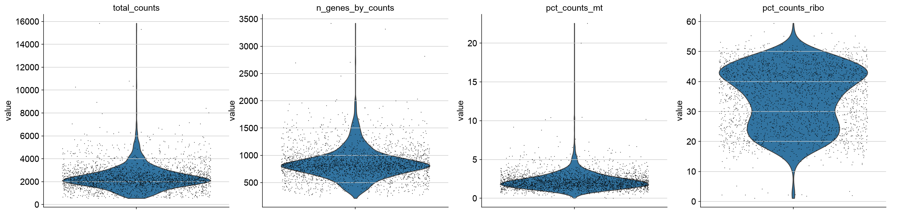
Example QC distributions from the Scanpy PBMC 3k dataset. These plots show why thresholds should be derived from the observed dataset rather than copied from a fixed recipe. The PBMC example figure omits doublet scores; run Scrublet on your own dataset before making doublet decisions.
5. Define data-driven QC flags
Conclusion
Percentile-based thresholds provide dataset-specific QC flags.
Motivation
Fixed cutoffs can be misleading. A mitochondrial threshold that is strict for one tissue may be permissive for another. A better strategy is to inspect the distribution and flag cells using lower and upper percentiles as a starting rule. The 2.5th and 97.5th percentiles are not universal cutoffs. Treat them as initial guidelines, plot them on the data, and adjust them when the observed distribution and experiment justify a different decision.
Do not reject cells at this stage. The flags are carried into the first PCA, clustering, and UMAP so you can decide whether they mark technical artifacts or real biology in the current experiment.
Dataset-level data-driven thresholds
These thresholds are computed from the current dataset. If the object contains multiple samples, captures, or chemistries, compare QC distributions by those metadata columns before making final decisions. Splitting and integrating multi-sample objects is covered in a separate tutorial.
lower_q = 2.5
upper_q = 97.5
gene_lo, gene_hi = np.nanpercentile(
adata.obs["n_genes_by_counts"],
[lower_q, upper_q],
)
count_lo, count_hi = np.nanpercentile(
adata.obs["total_counts"],
[lower_q, upper_q],
)
_, mt_hi = np.nanpercentile(
adata.obs["pct_counts_mt"],
[lower_q, upper_q],
)
print("Percentile starting thresholds")
print(f"n_genes_by_counts: lower={gene_lo:.1f}, upper={gene_hi:.1f}")
print(f"total_counts: lower={count_lo:.1f}, upper={count_hi:.1f}")
print(f"pct_counts_mt: upper={mt_hi:.1f}")
Plot percentile thresholds
sc.pl.scatter(
adata,
x="total_counts",
y="n_genes_by_counts",
color="pct_counts_mt",
show=False,
)
ax = plt.gca()
ax.axvline(count_lo, color="black", linestyle="--", linewidth=1)
ax.axvline(count_hi, color="black", linestyle="--", linewidth=1)
ax.axhline(gene_lo, color="black", linestyle="--", linewidth=1)
ax.axhline(gene_hi, color="black", linestyle="--", linewidth=1)
sc.pl.scatter(
adata,
x="total_counts",
y="pct_counts_mt",
show=False,
)
ax = plt.gca()
ax.axvline(count_lo, color="black", linestyle="--", linewidth=1)
ax.axvline(count_hi, color="black", linestyle="--", linewidth=1)
ax.axhline(mt_hi, color="black", linestyle="--", linewidth=1)
plt.show()
PBMC example output
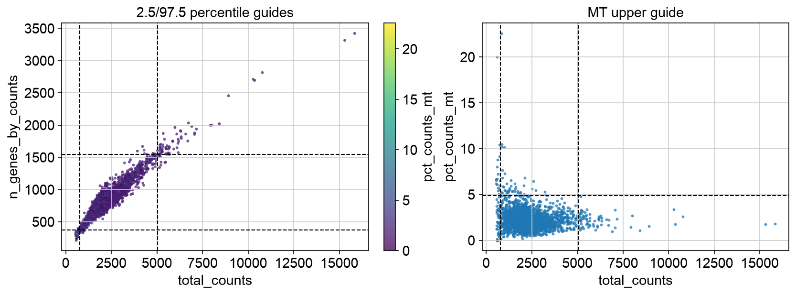
PBMC 3k QC scatter plots with percentile starting thresholds overlaid. These lines are a first pass, not final decisions; a different dataset can require different thresholds after visual inspection.
Flag QC outliers, but do not remove them yet
adata.obs["qc_low_genes"] = adata.obs["n_genes_by_counts"] < gene_lo
adata.obs["qc_high_genes"] = adata.obs["n_genes_by_counts"] > gene_hi
adata.obs["qc_low_counts"] = adata.obs["total_counts"] < count_lo
adata.obs["qc_high_counts"] = adata.obs["total_counts"] > count_hi
adata.obs["qc_high_mt"] = adata.obs["pct_counts_mt"] > mt_hi
adata.obs["qc_high_counts_low_genes"] = (
adata.obs["qc_high_counts"]
& adata.obs["qc_low_genes"]
)
adata.obs["qc_predicted_doublet"] = adata.obs["predicted_doublet"].astype(bool)
qc_flag_columns = [
"qc_low_genes",
"qc_high_genes",
"qc_low_counts",
"qc_high_counts",
"qc_high_mt",
"qc_high_counts_low_genes",
"qc_predicted_doublet",
]
adata.obs["qc_flag"] = adata.obs[qc_flag_columns].any(axis=1)
adata.obs["qc_flag_count"] = adata.obs[qc_flag_columns].sum(axis=1)
def encode_qc_flags(row):
"""Return a readable, multi-label QC flag string for one cell."""
labels = []
if row["qc_high_counts_low_genes"]:
labels.append("high_counts_low_genes")
else:
if row["qc_low_genes"]:
labels.append("low_genes")
if row["qc_high_counts"]:
labels.append("high_counts")
if row["qc_high_genes"]:
labels.append("high_genes")
if row["qc_low_counts"]:
labels.append("low_counts")
if row["qc_high_mt"]:
labels.append("high_mt")
if row["qc_predicted_doublet"]:
labels.append("predicted_doublet")
return ";".join(labels) if len(labels) > 0 else "pass"
adata.obs["qc_flags"] = adata.obs[qc_flag_columns].apply(
encode_qc_flags,
axis=1,
)
adata.obs["primary_qc_flag"] = (
adata.obs["qc_flags"]
.str.split(";")
.str[0]
.astype("category")
)
adata.obs[qc_flag_columns + ["qc_flag"]].sum().sort_values(ascending=False)
adata.obs["qc_flags"].value_counts()
adata.obs["primary_qc_flag"].value_counts()
The boolean columns support filtering logic. qc_flags records the named
reason or reasons for each cell, such as low_counts, high_counts,
high_mt, or predicted_doublet. primary_qc_flag stores one
plot-friendly category per cell.
Inspect flagged cells
sc.pl.violin(
adata,
[
"total_counts",
"n_genes_by_counts",
"pct_counts_mt",
"doublet_score",
],
groupby="primary_qc_flag",
multi_panel=True,
jitter=0.4,
)
sc.pl.scatter(
adata,
x="total_counts",
y="n_genes_by_counts",
color="primary_qc_flag",
)
sc.pl.scatter(
adata,
x="total_counts",
y="pct_counts_mt",
color="qc_high_mt",
)
sc.pl.scatter(
adata,
x="total_counts",
y="n_genes_by_counts",
color="qc_high_counts_low_genes",
)
PBMC example output
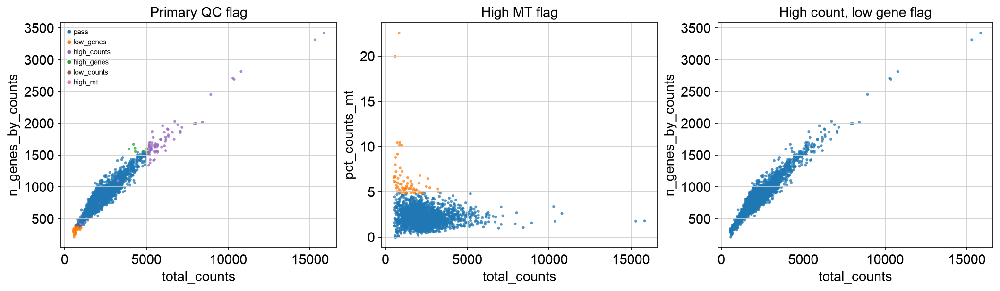
PBMC 3k flagged-cell inspection plots. The same percentile guidelines can flag different patterns across datasets, so these plots should be reviewed before any removal.
Keep the original object for review
At this point, the cells are only flagged. A high mitochondrial fraction could
represent damaged cells, but it can also be plausible in some cell states. High
gene and count content can indicate doublets, but it can also reflect larger or
more transcriptionally active cells. High UMI/count depth with low detected-gene
content can reflect signal concentrated in a small set of genes, ambient or
damaged-cell signal, or a real cell state with dominant transcripts. The first
embedding should show where these flags fall before cells are removed. Keep the
encoded qc_flags column so each cell carries the reason it was flagged.
adata.obs["qc_review_status"] = "keep_for_first_pass"
adata.obs.loc[adata.obs["qc_flag"], "qc_review_status"] = "flagged_for_review"
adata.obs["qc_review_status"].value_counts()
Prepare first-pass analysis object
Filter genes for the first-pass embedding, but keep all cells so QC flags can be seen on PCA, clusters, and UMAP.
adata_work = adata.copy()
# Data-driven gene filtering:
# keep genes detected in at least 0.1% of cells, with a minimum of 3 cells.
min_cells_fraction = 0.001
min_cells = max(3, int(np.ceil(min_cells_fraction * adata_work.n_obs)))
print(f"Filtering genes detected in fewer than {min_cells} cells")
sc.pp.filter_genes(adata_work, min_cells=min_cells)
adata_work
6. Normalize count depth
Conclusion
Normalization makes cells more comparable by reducing library-size effects.
Motivation
Cells differ in the total number of captured molecules. Without normalization, high-depth cells may appear to express more of many genes simply because more molecules were sampled.
Code
adata_work.layers["counts"] = adata_work.X.copy()
sc.pp.normalize_total(
adata_work,
target_sum=1e4,
)
adata_work.layers["norm"] = adata_work.X.copy()
7. Log-transform normalized counts
Conclusion
Log transformation compresses dynamic range and improves the geometry used by PCA and clustering.
Motivation
Highly expressed genes can dominate distances between cells. log1p compresses
large values while remaining defined at zero.
Code
sc.pp.log1p(adata_work)
adata_work.layers["lognorm"] = adata_work.X.copy()
8. Score cell cycle state
Conclusion
Cell cycle scores are biological/context covariates, not automatic QC failures.
Motivation
Cell cycle can be a biological signal or a confounder, depending on the experiment. Score it before PCA so you can inspect whether clusters or UMAP structure are dominated by S phase or G2/M phase. Do not regress out or remove cell cycle effects by default; decide after inspecting the experiment.
The example below uses human gene symbols. For mouse or Ensembl identifiers,
convert the list to match adata.var_names first.
Code
s_genes = [
"MCM5", "PCNA", "TYMS", "FEN1", "MCM2", "MCM4", "RRM1", "UNG",
"GINS2", "MCM6", "CDCA7", "DTL", "PRIM1", "UHRF1", "CENPU",
"HELLS", "RFC2", "RPA2", "NASP", "RAD51AP1", "GMNN", "WDR76",
"SLBP", "CCNE2", "UBR7", "POLD3", "MSH2", "ATAD2", "RAD51",
"RRM2", "CDC45", "CDC6", "EXO1", "TIPIN", "DSCC1", "BLM",
"CASP8AP2", "USP1", "CLSPN", "POLA1", "CHAF1B", "BRIP1", "E2F8",
]
g2m_genes = [
"HMGB2", "CDK1", "NUSAP1", "UBE2C", "BIRC5", "TPX2", "TOP2A",
"NDC80", "CKS2", "NUF2", "CKS1B", "MKI67", "TMPO", "CENPF",
"TACC3", "FAM64A", "SMC4", "CCNB2", "CKAP2L", "CKAP2", "AURKB",
"BUB1", "KIF11", "ANP32E", "TUBB4B", "GTSE1", "KIF20B", "HJURP",
"CDCA3", "HN1", "CDC20", "TTK", "CDC25C", "KIF2C", "RANGAP1",
"NCAPD2", "DLGAP5", "CDCA2", "CDCA8", "ECT2", "KIF23", "HMMR",
"AURKA", "PSRC1", "ANLN", "LBR", "CKAP5", "CENPE", "CTCF",
"NEK2", "G2E3", "GAS2L3", "CBX5", "CENPA",
]
s_genes_present = [gene for gene in s_genes if gene in adata_work.var_names]
g2m_genes_present = [gene for gene in g2m_genes if gene in adata_work.var_names]
if len(s_genes_present) == 0 or len(g2m_genes_present) == 0:
raise ValueError("No cell cycle genes found. Check gene identifiers.")
sc.tl.score_genes_cell_cycle(
adata_work,
s_genes=s_genes_present,
g2m_genes=g2m_genes_present,
)
adata.obs[["S_score", "G2M_score", "phase"]] = adata_work.obs[
["S_score", "G2M_score", "phase"]
]
sc.pl.violin(
adata_work,
["S_score", "G2M_score"],
groupby="phase",
multi_panel=True,
jitter=0.4,
)
PBMC example output
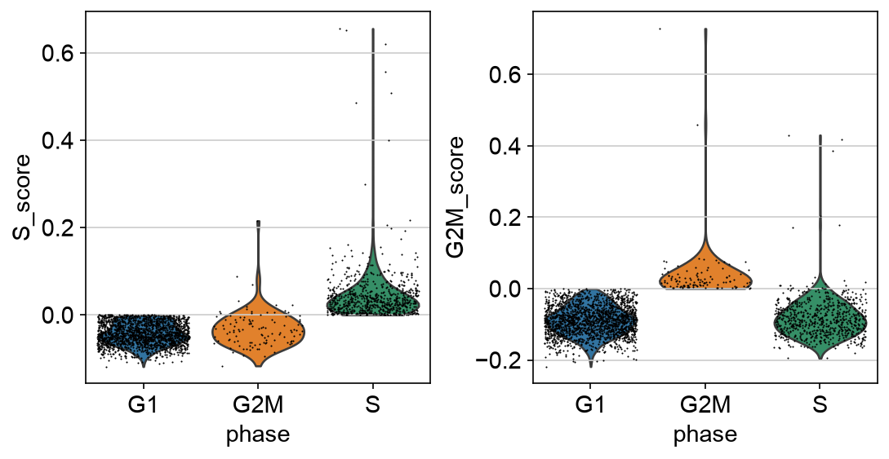
PBMC 3k cell cycle scores. These plots show whether S-phase and G2/M scores separate a subset of cells enough to consider during cluster interpretation.
9. Select highly variable genes
Conclusion
Highly variable genes define which signals enter dimensionality reduction without dropping other genes from the cleaned object.
Motivation
Single-cell datasets contain thousands of genes, but many are uninformative for cell-state structure. Highly variable gene selection focuses the analysis on genes whose variation is higher than expected for their mean expression. Use HVGs as a feature mask for PCA, neighbors, clustering, and UMAP. Keep all genes in the main AnnData object for marker inspection, annotation, and saving.
Code
sc.pp.highly_variable_genes(
adata_work,
n_top_genes=2000,
flavor="seurat",
)
sc.pl.highly_variable_genes(adata_work)
print(adata_work.var["highly_variable"].value_counts())
PBMC example output
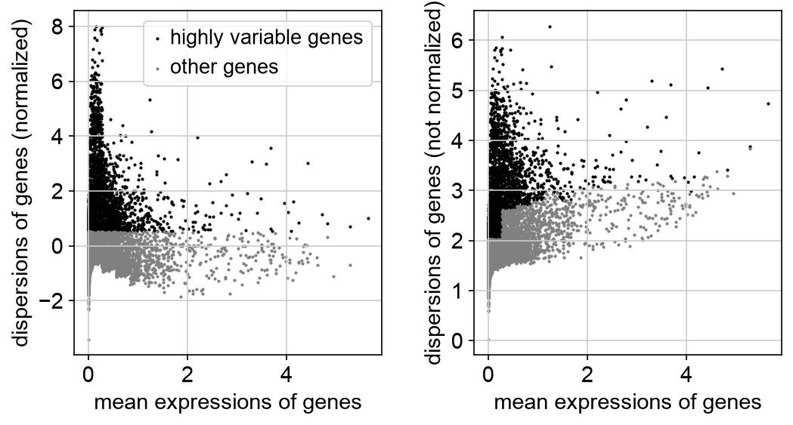
PBMC 3k highly variable gene selection. HVGs are used as a feature mask for PCA and graph construction while the full cleaned object is retained.
10. Scale data
Conclusion
Scaling prepares the expression matrix for PCA.
Motivation
PCA is sensitive to feature scale. Scaling centers each gene and gives it unit variance. Values are often clipped to reduce the influence of extreme outliers. The full object is retained; HVGs are selected as a PCA feature mask in the next step.
Code
sc.pp.scale(adata_work, max_value=10)
11. Run PCA
Conclusion
PCA compresses thousands of genes into a smaller set of variation axes.
Motivation
PCA identifies linear combinations of genes that explain major axes of variation. Here, PCA uses the highly variable genes without subsetting the AnnData object. These axes can reflect biology, but also batch, count depth, mitochondrial content, or other technical structure.
Code
sc.tl.pca(
adata_work,
svd_solver="arpack",
mask_var="highly_variable",
)
sc.pl.pca_variance_ratio(
adata_work,
log=True,
n_pcs=50,
)
sc.pl.pca(
adata_work,
color=[
"total_counts",
"n_genes_by_counts",
"pct_counts_mt",
"S_score",
"G2M_score",
"phase",
],
)
PBMC example output
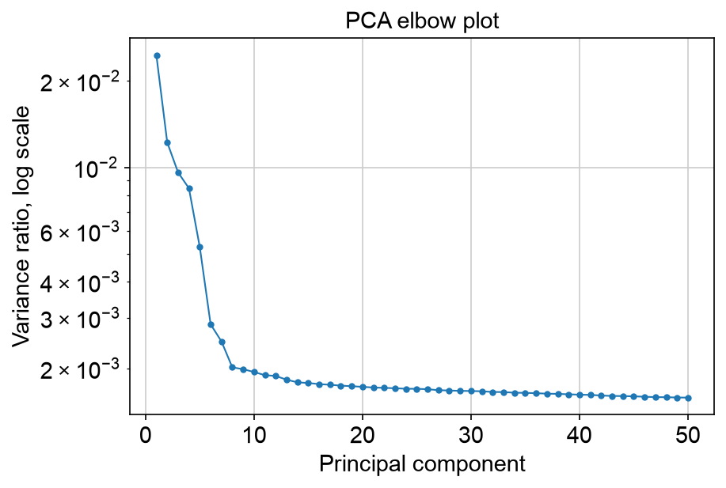
PBMC 3k PCA variance-ratio elbow plot. The curve helps choose a starting number of PCs for the neighbor graph.
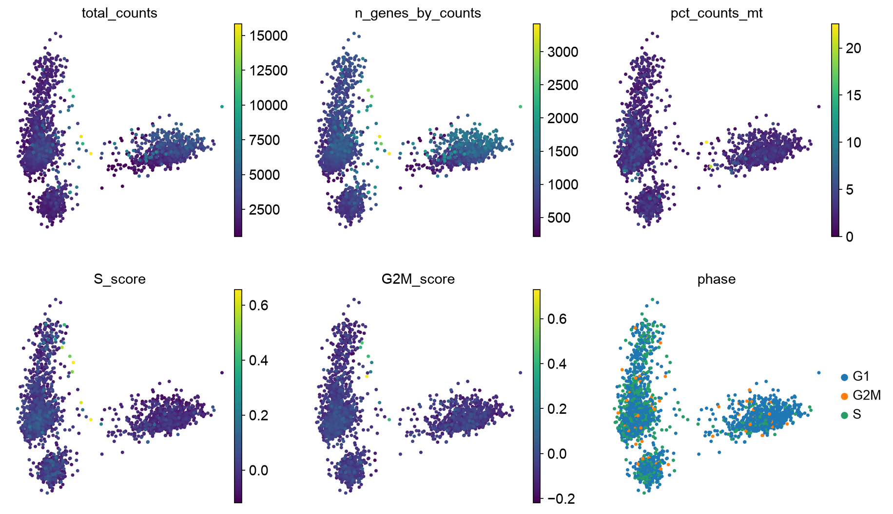
PBMC 3k PCA colored by QC metrics and cell cycle state. This checks whether major PCs are dominated by count depth, mitochondrial fraction, or cell cycle.
Choose number of PCs
The PCA variance-ratio plot is the elbow plot for this workflow. It shows how much variance is explained by each successive principal component. A useful starting point is the region where the curve begins to flatten: PCs before that point usually capture stronger structure, while PCs far into the flat tail are more likely to add noise.
The elbow is a guideline, not a rule. Too few PCs can merge real cell states, rare populations, or continuous gradients. Too many PCs can carry technical variation, low-quality-cell structure, or noise into the neighbor graph. Small, fairly homogeneous datasets may work well with 15-30 PCs. Larger datasets, complex tissues, tumor samples, developmental trajectories, immune atlases, or datasets with rare cell populations may need 40, 50, or more PCs.
After choosing n_pcs, inspect whether clusters have coherent marker genes
and whether UMAP structure is dominated by QC metrics such as count depth,
mitochondrial fraction, doublet score, or cell cycle. If the representation is
unstable or biologically implausible, rerun the neighbor graph and UMAP with a
different PC count.
# Start near the elbow, then adjust based on dataset complexity and QC review.
n_pcs = 30
12. Build the neighbor graph
Conclusion
The neighbor graph defines which cells are considered locally similar.
Motivation
Clustering and UMAP are based on a graph of nearest neighbors. This graph is
usually built from PCA coordinates, not directly from all genes. The n_pcs
choice controls which PCA dimensions are passed into this graph, so it directly
affects clustering and UMAP.
Code
sc.pp.neighbors(
adata_work,
n_neighbors=15,
n_pcs=n_pcs,
)
13. Cluster cells
Conclusion
Clustering partitions the neighbor graph into groups of transcriptionally similar cells.
Motivation
Leiden clustering identifies communities in the neighbor graph. The resolution parameter controls granularity. There is no universally correct resolution.
Code
sc.tl.leiden(
adata_work,
resolution=0.5,
key_added="leiden_0_5",
)
sc.tl.leiden(
adata_work,
resolution=1.0,
key_added="leiden_1_0",
)
adata_work.obs[["leiden_0_5", "leiden_1_0"]].head()
14. Compute UMAP
Conclusion
UMAP visualizes the neighbor graph and helps inspect QC flags; it does not prove cluster identity.
Motivation
UMAP projects the neighbor graph into two dimensions. It is useful for inspection and communication, but distances and separations in UMAP should not be overinterpreted. In the first pass, include QC flags, doublet scores, core QC metrics, and cell cycle scores on the UMAP. A cluster enriched for QC flags or cell cycle phase is a reason to inspect the cells, not automatic proof that the cluster should be removed.
Code
sc.tl.umap(adata_work)
sc.pl.umap(
adata_work,
color=[
"leiden_0_5",
"primary_qc_flag",
"qc_flag_count",
"qc_high_counts_low_genes",
"predicted_doublet",
"doublet_score",
"total_counts",
"n_genes_by_counts",
"pct_counts_mt",
"S_score",
"G2M_score",
"phase",
],
)
If sample metadata exist:
metadata_colors = [
col
for col in [
"sample",
"condition",
"leiden_0_5",
"primary_qc_flag",
"phase",
]
if col in adata_work.obs
]
if len(metadata_colors) > 0:
sc.pl.umap(
adata_work,
color=metadata_colors,
)
PBMC example output
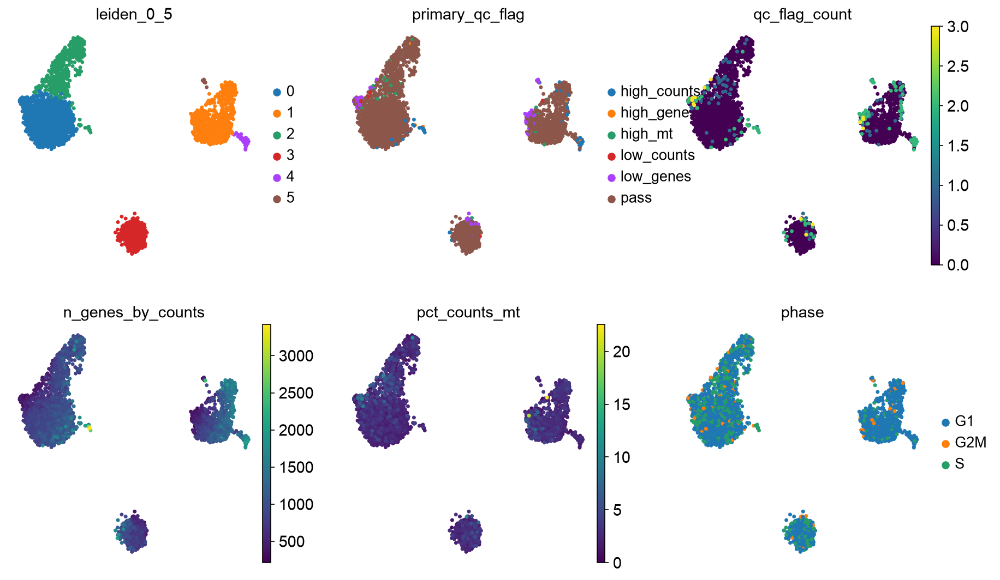
First-pass PBMC 3k UMAP used for QC review. Encoded QC flags and cell cycle phase are inspected in the same embedding as the clustering result before cells are removed.
Summarize QC flags and cell cycle by cluster
Cluster-level summaries help identify groups dominated by low-quality cells or putative doublets. They also show whether clusters are dominated by cell cycle phase. Interpret these summaries alongside marker genes and the biology of the experiment.
qc_by_cluster = (
adata_work.obs
.assign(
qc_flag_bool=adata_work.obs["qc_flag"].astype(bool),
high_counts_low_genes_bool=adata_work.obs[
"qc_high_counts_low_genes"
].astype(bool),
predicted_doublet_bool=adata_work.obs["predicted_doublet"].astype(bool),
s_phase_bool=adata_work.obs["phase"].astype(str).eq("S"),
g2m_phase_bool=adata_work.obs["phase"].astype(str).eq("G2M"),
)
.groupby("leiden_0_5", observed=True)
.agg(
n_cells=("qc_flag_bool", "size"),
qc_flag_fraction=("qc_flag_bool", "mean"),
high_counts_low_genes_fraction=(
"high_counts_low_genes_bool",
"mean",
),
doublet_fraction=("predicted_doublet_bool", "mean"),
median_genes=("n_genes_by_counts", "median"),
median_counts=("total_counts", "median"),
median_pct_counts_mt=("pct_counts_mt", "median"),
median_s_score=("S_score", "median"),
median_g2m_score=("G2M_score", "median"),
s_phase_fraction=("s_phase_bool", "mean"),
g2m_phase_fraction=("g2m_phase_bool", "mean"),
)
.sort_values("qc_flag_fraction", ascending=False)
)
qc_by_cluster
qc_primary_by_cluster = pd.crosstab(
adata_work.obs["leiden_0_5"],
adata_work.obs["primary_qc_flag"],
normalize="index",
)
qc_primary_by_cluster
ax = qc_primary_by_cluster.plot(
kind="bar",
stacked=True,
figsize=(8, 4),
width=0.85,
)
ax.set_xlabel("Leiden cluster")
ax.set_ylabel("Fraction of cells")
ax.set_title("Primary QC flag composition by cluster")
ax.legend(
title="Primary QC flag",
bbox_to_anchor=(1.02, 1),
loc="upper left",
frameon=False,
)
plt.tight_layout()
plt.show()
This plot makes it easier to see whether one cluster is mostly flagged cells or whether QC flags are scattered across the embedding. A cluster enriched for one QC reason should be inspected with marker genes and experiment metadata before being removed.
PBMC example output
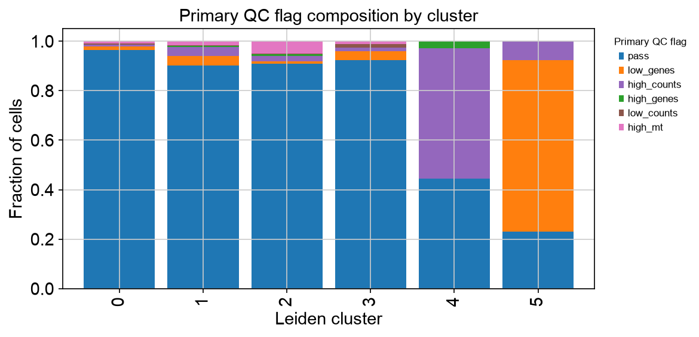
PBMC 3k primary QC flag proportions by first-pass Leiden cluster. The plot summarizes whether QC flags are concentrated in specific clusters or spread across the dataset.
15. Review QC decisions and rerun representation
Conclusion
Cells should be removed after QC review, then PCA, clustering, and UMAP should be rerun on the cleaned dataset.
Motivation
The first-pass embedding is a diagnostic view. It answers questions such as:
Do high-mitochondrial cells form a low-gene, low-count cluster consistent with damaged cells?
Do high-gene and high-count cells also have high doublet scores?
Do high-count cells with low detected-gene content cluster together, and do their marker genes suggest a technical artifact or expected biology?
Do clusters separate primarily by cell cycle phase, and is proliferation expected for the sample?
Are flagged cells concentrated in one sample, one capture, or one cluster?
Could high mitochondrial or gene content be expected for this experiment?
After this review, define a removal rule that matches the experiment. The example below removes low-gene cells, high-count low-gene cells, and predicted doublets. High mitochondrial cells are left as a commented decision because they require experiment-specific interpretation.
Code
adata.obs["remove_after_qc_review"] = (
adata.obs["qc_low_genes"] |
adata.obs["qc_low_counts"] |
adata.obs["qc_high_counts_low_genes"] |
adata.obs["qc_predicted_doublet"]
)
# Add high-mitochondrial cells only if inspection supports removal.
# adata.obs["remove_after_qc_review"] |= adata.obs["qc_high_mt"]
adata.obs["remove_after_qc_review"].value_counts()
adata_qc = adata[~adata.obs["remove_after_qc_review"]].copy()
min_cells_fraction = 0.001
min_cells = max(3, int(np.ceil(min_cells_fraction * adata_qc.n_obs)))
print(f"Filtering genes detected in fewer than {min_cells} cells")
sc.pp.filter_genes(adata_qc, min_cells=min_cells)
adata_qc.layers["counts"] = adata_qc.X.copy()
sc.pp.normalize_total(adata_qc, target_sum=1e4)
adata_qc.layers["norm"] = adata_qc.X.copy()
sc.pp.log1p(adata_qc)
adata_qc.layers["lognorm"] = adata_qc.X.copy()
adata_qc.raw = adata_qc
s_genes_present = [gene for gene in s_genes if gene in adata_qc.var_names]
g2m_genes_present = [gene for gene in g2m_genes if gene in adata_qc.var_names]
if len(s_genes_present) == 0 or len(g2m_genes_present) == 0:
raise ValueError("No cell cycle genes found. Check gene identifiers.")
sc.tl.score_genes_cell_cycle(
adata_qc,
s_genes=s_genes_present,
g2m_genes=g2m_genes_present,
)
sc.pp.highly_variable_genes(
adata_qc,
n_top_genes=2000,
flavor="seurat",
)
sc.pp.scale(adata_qc, max_value=10)
sc.tl.pca(
adata_qc,
svd_solver="arpack",
mask_var="highly_variable",
)
sc.pp.neighbors(
adata_qc,
n_neighbors=15,
n_pcs=n_pcs,
)
sc.tl.leiden(
adata_qc,
resolution=0.5,
key_added="leiden_0_5",
)
sc.tl.umap(adata_qc)
sc.pl.umap(
adata_qc,
color=[
"leiden_0_5",
"total_counts",
"n_genes_by_counts",
"pct_counts_mt",
"S_score",
"G2M_score",
"phase",
],
)
# Restore the main matrix to log-normalized expression before saving.
adata_qc.X = adata_qc.layers["lognorm"].copy()
PBMC example output
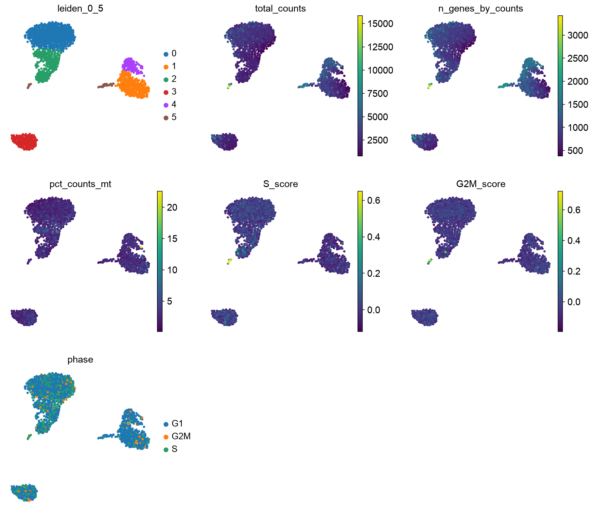
PBMC 3k final UMAP after reviewed filtering and rerunning the representation. The cleaned embedding should be inspected again for QC and cell cycle structure.
Optional covariate handling
Cell cycle score, sample identity, mitochondrial fraction, count depth, detected-gene content, and doublet score can all explain structure. Inspect them before deciding whether to regress, stratify, correct, or leave them unchanged. Regression is not shown here because it should follow from the biological question and experimental design.
Ambient RNA or background correction can be important, especially for droplet datasets with substantial empty-droplet signal. That topic is also outside the scope of this introductory tutorial.
16. Inspect known marker genes
Conclusion
Cluster labels should be assigned from marker evidence, not from the cluster number.
Motivation
Clusters are algorithmic groups. Annotation requires biological interpretation. Known marker genes help determine whether clusters correspond to expected cell types or states.
Example marker list
Modify this list for your tissue.
marker_genes = {
"T cells": ["CD3D", "CD3E", "TRAC"],
"CD4 T cells": ["CD4", "IL7R", "CCR7"],
"CD8 T cells": ["CD8A", "CD8B", "NKG7"],
"B cells": ["MS4A1", "CD79A", "CD74"],
"NK cells": ["GNLY", "NKG7", "KLRD1"],
"Monocytes": ["LYZ", "S100A8", "S100A9"],
"Dendritic cells": ["FCER1A", "CST3"],
"Platelets": ["PPBP", "PF4"],
}
marker_genes_present = {
cell_type: [gene for gene in genes if gene in adata_qc.var_names]
for cell_type, genes in marker_genes.items()
}
marker_genes_present = {
cell_type: genes
for cell_type, genes in marker_genes_present.items()
if len(genes) > 0
}
Dot plot
sc.pl.dotplot(
adata_qc,
marker_genes_present,
groupby="leiden_0_5",
standard_scale="var",
dendrogram=False,
use_raw=True,
)
PBMC example output
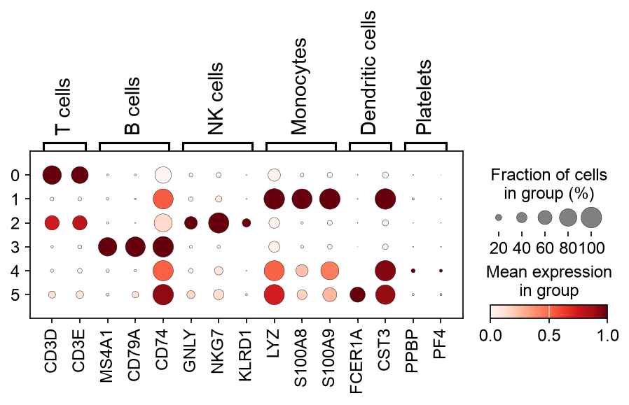
Example PBMC 3k marker dot plot after reviewed filtering and rerunning the representation. Marker inspection uses the full cleaned object, not only HVGs.
UMAP marker overlays
genes_to_plot = ["CD3D", "MS4A1", "LYZ", "NKG7", "PPBP"]
genes_to_plot = [g for g in genes_to_plot if g in adata_qc.var_names]
sc.pl.umap(
adata_qc,
color=genes_to_plot,
vmax="p99",
use_raw=True,
)
PBMC example output
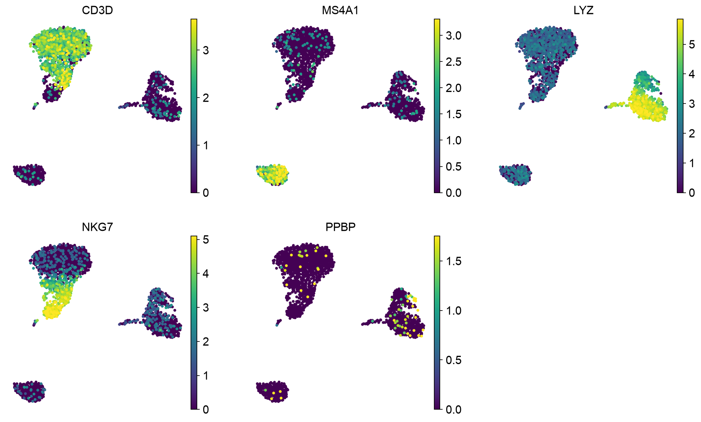
PBMC 3k marker overlays on the final UMAP. Marker overlays help connect clusters to expected cell classes before assigning labels.
17. Find cluster marker genes
Conclusion
Marker-gene tests rank genes that distinguish clusters, but they are not automatically condition-level inference.
Motivation
Cluster marker discovery asks which genes distinguish one cluster from others. This is useful for annotation. It is not the same as testing disease versus control across biological replicates.
Code
sc.tl.rank_genes_groups(
adata_qc,
groupby="leiden_0_5",
method="wilcoxon",
use_raw=True,
)
sc.pl.rank_genes_groups(
adata_qc,
n_genes=20,
sharey=False,
)
marker_table = sc.get.rank_genes_groups_df(adata_qc, group=None)
marker_table.head()
marker_table.to_csv("cluster_markers_wilcoxon.csv", index=False)
PBMC example output
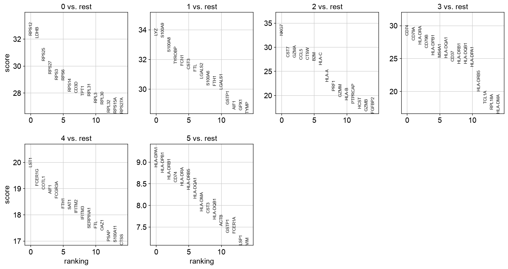
PBMC 3k ranked marker genes by Leiden cluster. These rankings support annotation, but they are not condition-level differential expression.
18. Annotate clusters
Conclusion
Annotation converts algorithmic clusters into biological hypotheses.
Motivation
Annotation should combine known markers, cluster-specific marker results, metadata, and biological context. Ambiguous clusters should remain annotated as ambiguous until additional evidence is available.
Code
cluster_to_celltype = {
"0": "T cells",
"1": "Monocytes",
"2": "B cells",
# Edit after inspecting marker expression.
}
adata_qc.obs["cell_type"] = (
adata_qc.obs["leiden_0_5"]
.map(cluster_to_celltype)
.astype("category")
)
sc.pl.umap(
adata_qc,
color=["leiden_0_5", "cell_type"],
)
PBMC example output
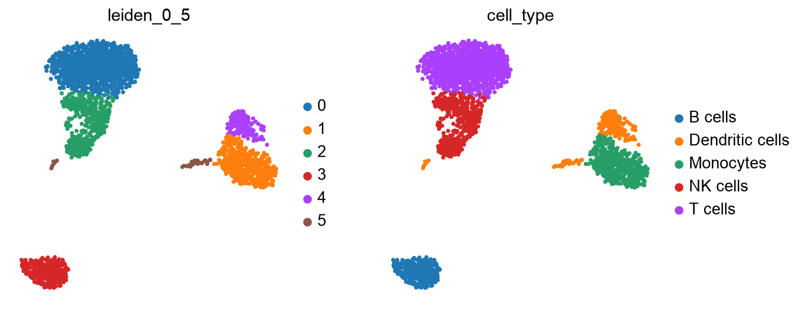
PBMC 3k UMAP with provisional broad cell-type labels. In your own analysis, edit the cluster-to-cell-type mapping after marker review.
Optional: iterative clustering for subtypes
A single global clustering is often enough to identify broad cell classes, such as T cells, B cells, monocytes, epithelial cells, stromal cells, or endothelial cells. It is often not enough to resolve subtypes within each class. For example, a global PBMC analysis may separate T cells from monocytes and B cells, but CD4 T-cell states, CD8 T-cell states, regulatory T cells, cycling T cells, or activation states may require a T-cell-only analysis.
The usual strategy is iterative:
assign broad cell classes from the cleaned global object
subset one broad class
rerun HVG selection, PCA, neighbor graph construction, clustering, and UMAP within that subset
inspect QC metrics, cell cycle, and marker genes again
map the subtype labels back to the full object
This is not the same as increasing global Leiden resolution until more clusters appear. Subclustering changes the feature selection and representation so that variation within one cell class is no longer dominated by differences between major cell classes.
Example code for one broad class:
broad_class = "T cells"
adata_sub = adata_qc[adata_qc.obs["cell_type"] == broad_class].copy()
# Restart from log-normalized expression, not the globally scaled matrix.
adata_sub.X = adata_sub.layers["lognorm"].copy()
sc.pp.highly_variable_genes(
adata_sub,
n_top_genes=1000,
flavor="seurat",
)
sc.pp.scale(adata_sub, max_value=10)
sc.tl.pca(
adata_sub,
svd_solver="arpack",
mask_var="highly_variable",
)
sc.pl.pca_variance_ratio(
adata_sub,
log=True,
n_pcs=50,
)
sub_n_pcs = 20
sc.pp.neighbors(
adata_sub,
n_neighbors=15,
n_pcs=sub_n_pcs,
)
sc.tl.leiden(
adata_sub,
resolution=0.5,
key_added="subcluster",
)
sc.tl.umap(adata_sub)
sc.pl.umap(
adata_sub,
color=[
"subcluster",
"primary_qc_flag",
"total_counts",
"pct_counts_mt",
"phase",
],
)
sc.tl.rank_genes_groups(
adata_sub,
groupby="subcluster",
method="wilcoxon",
use_raw=True,
)
sc.pl.rank_genes_groups(
adata_sub,
n_genes=20,
sharey=False,
)
PBMC example output
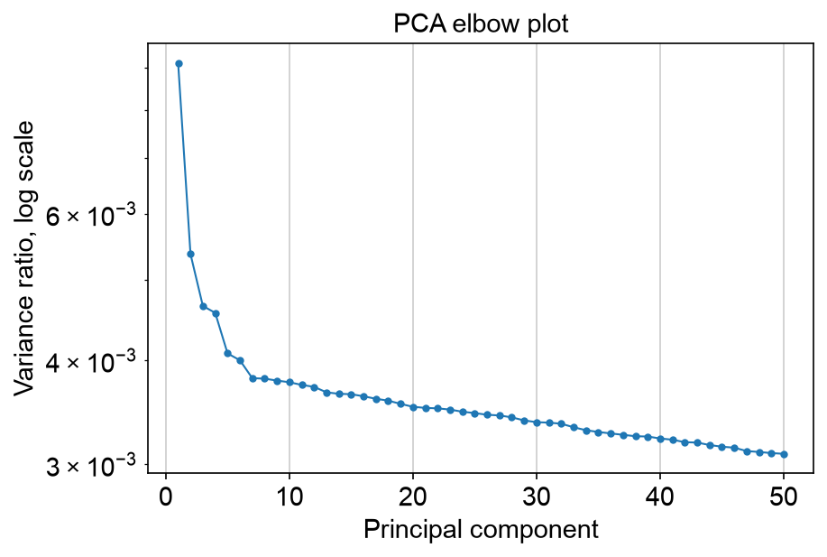
PBMC 3k T-cell-only PCA elbow plot. Subclustering should choose PCs from the subset representation, not from the global representation.
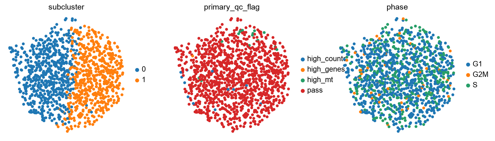
PBMC 3k T-cell-only UMAP colored by subcluster, QC flag, and cell cycle phase. The same QC review logic applies inside the subset.
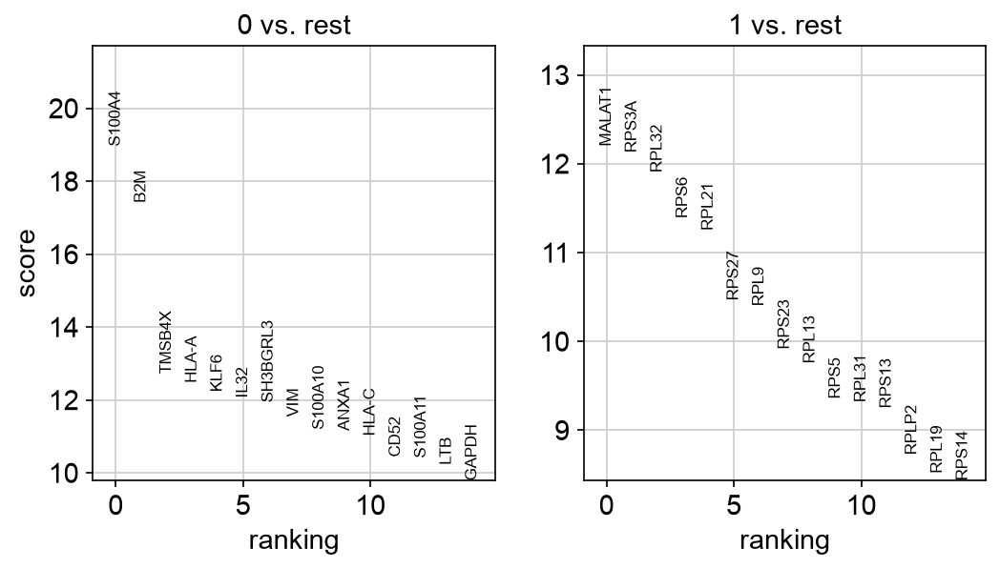
PBMC 3k ranked marker genes for T-cell subclusters. Subtype labels should be assigned only after reviewing these markers and the experiment context.
Map subtype labels back to the full cleaned object:
adata_qc.obs["subcluster_label"] = pd.NA
adata_qc.obs.loc[adata_sub.obs_names, "subcluster_label"] = (
broad_class + "_" + adata_sub.obs["subcluster"].astype(str)
)
sc.pl.umap(
adata_qc,
color=["cell_type", "subcluster_label"],
)
PBMC example output
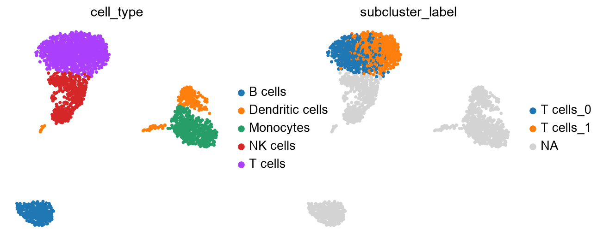
PBMC 3k full UMAP with T-cell subcluster labels mapped back onto the cleaned object. Subtype labels should remain nested within their broad cell class.
Only report subtypes when they have enough cells, coherent marker genes, and a reasonable relationship to the experiment. Very small subclusters, clusters dominated by QC flags, or clusters defined mostly by count depth, mitochondrial fraction, or cell cycle should be treated cautiously.
19. Save the processed object
Conclusion
Save the full cleaned object, not only the HVG feature subset. The saved object
should retain all genes that passed gene filtering, raw counts, normalized/log
layers, QC columns, cell cycle scores, PCA, clusters, UMAP coordinates, and
annotations. Because scaling overwrites adata_qc.X during PCA preparation,
restore adata_qc.X to log-normalized expression before writing the object.
Code
adata_qc.X = adata_qc.layers["lognorm"].copy()
adata_qc.write("scanpy_tutorial_processed_full.h5ad")
20. Recommended QC reporting
Conclusion
A reproducible tutorial should report both thresholds and their motivation.
Recommended report items
Number of cells before and after QC.
Number of genes before and after filtering.
QC metrics used.
Dataset-level percentile values used.
Gene detection threshold used for gene filtering.
Cell cycle gene set used and whether gene identifiers were converted.
Number of PCs used and how the elbow plot informed that choice.
Whether any covariates were regressed, corrected, stratified, or left unchanged.
Whether ambient RNA/background correction was considered.
Number and fraction of cells flagged before removal.
Counts and fractions for encoded QC reasons in
qc_flagsandprimary_qc_flag.Number and fraction of cells removed after QC review.
First-pass UMAP colored by QC flags, doublet score, QC metrics, and cell cycle phase.
Proportion of QC-flagged cells per first-pass cluster.
Stacked bar plot of primary QC flag proportions per first-pass cluster.
Proportion of high-count, low-gene cells per first-pass cluster.
Proportion of S-phase and G2/M-phase cells per first-pass cluster.
Final UMAP after reviewed filtering and rerunning PCA, clustering, and UMAP.
Marker-gene dot plot used for annotation.
Whether broad cell classes were subclustered, with subtype-specific PCs, resolution, markers, and QC review.
Example summary table
qc_report = pd.DataFrame({
"metric": [
"cells_before_qc",
"cells_flagged_for_review",
"cells_high_counts_low_genes",
"cells_s_phase",
"cells_g2m_phase",
"cells_removed_after_review",
"cells_after_qc",
"genes_after_qc",
],
"value": [
adata.n_obs,
int(adata.obs["qc_flag"].sum()),
int(adata.obs["qc_high_counts_low_genes"].sum()),
int((adata.obs["phase"].astype(str) == "S").sum()),
int((adata.obs["phase"].astype(str) == "G2M").sum()),
int(adata.obs["remove_after_qc_review"].sum()),
adata_qc.n_obs,
adata_qc.n_vars,
],
})
qc_report.to_csv("qc_report_summary.csv", index=False)
qc_report
qc_reason_counts = adata.obs["primary_qc_flag"].value_counts()
qc_reason_fractions = adata.obs["primary_qc_flag"].value_counts(normalize=True)
qc_reason_summary = pd.DataFrame({
"n_cells": qc_reason_counts,
"fraction": qc_reason_fractions,
})
qc_reason_summary.to_csv("qc_flag_reason_summary.csv")
qc_reason_summary
21. Workflow summary
Conclusion
The workflow turns raw counts into an interpretable cell-state representation.
Workflow
10x matrix directory or HDF5 file
↓
AnnData object
↓
raw counts preserved
↓
QC metrics computed
↓
data-driven QC flags selected
↓
first-pass gene filtering
↓
first-pass normalization and log1p transformation
↓
cell cycle scored
↓
first-pass HVG feature mask, PCA, clustering, and UMAP
↓
UMAP and cluster-level QC and cell cycle proportions reviewed
↓
cells removed after experiment-specific QC decision
↓
genes filtered on cleaned dataset
↓
library-size normalization
↓
log1p transformation
↓
highly variable gene selection
↓
scaling
↓
PCA
↓
neighbor graph
↓
Leiden clustering
↓
UMAP visualization
↓
marker-gene dot plot and cluster annotation
↓
optional cell-class-specific subclustering for subtype annotation
Key cautions
QC thresholds are dataset-specific.
QC should be run on individual experiments or captures before integration.
Flag questionable cells before removing them.
High mitochondrial content or high gene content can be biological in some experiments.
High UMI/count depth with low detected-gene content should be inspected before removal.
Cell cycle can be expected biology, a confounder, or both; inspect before regression or removal.
Ambient RNA correction can matter, but is outside the scope of this tutorial.
Batch correction and integration require separate analysis decisions.
Subtype discovery often requires cell-class-specific subclustering after broad annotation.
UMAP is a visualization, not a statistical test.
Cluster marker genes are useful for annotation but are not the same as condition-level DGE.
Raw counts should be preserved for downstream count-based analyses.
Biological replication is defined by samples or donors, not by cells.